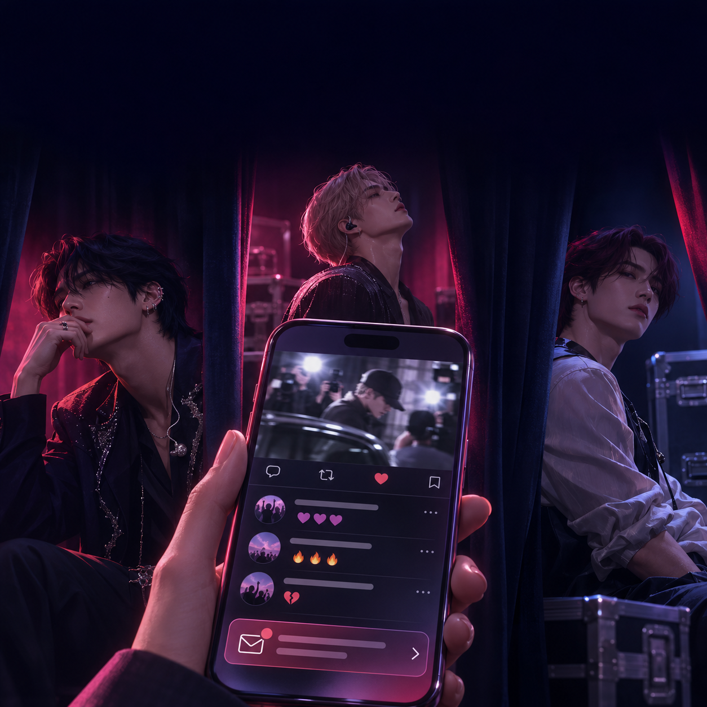
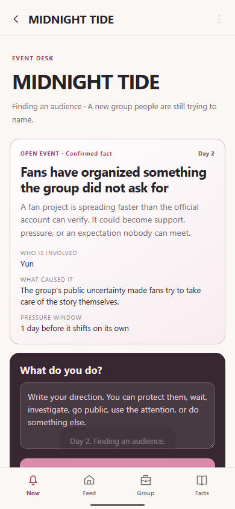

AFTER HOURS
It’s your first night as their manager. A photo is already spreading.
In this idol management game, one of your members is photographed leaving a private meeting. Fans are filling in the blanks. Do you call the member first or put out a statement?
Play in your browser without an account or API key.

Browser demo
The rumor breaks tonight.
Start with a new fictional group. Play through the first rumor and see how it changes the next day.
- Check the facts. The photo is real. What it means is still a rumor.
- Write your response. Try “Keep this private and talk to them first.” Review the draft and confirm it.
- Advance to Day 2. See how the group’s trust and public attention change, and what lands on your desk next.

Windows demo
What would you say to Jian?
Jian has a solo offer and asks you to keep it between you. Play NOVA’s story in the Windows demo. Bring your own API key for Gemini, MiniMax, OpenAI, or another compatible provider to reply in your own words and see what Jian remembers later.
Download for Windows- Install Node.js 22 or newer and extract the ZIP.
- Double-click Set-up-AI.cmd. Choose a provider in
AI_CHAT_PROVIDER, paste its API key in the matching field, and save. - Double-click Play.cmd. Open the fixed NOVA sample and read Jian’s message. Look for Live AI above the chat.
You can save multiple connections and use one for character chat and another for decision drafts. The README inside the ZIP explains how. Live AI uses your own account and billing and sends game context to the provider selected for that feature. Sample mode works without a key.